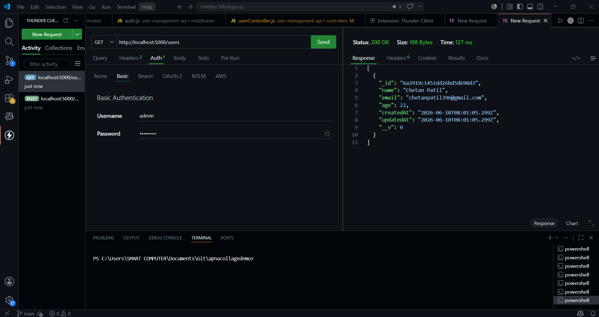

Chetan Patil
MCA Student • Full Stack Web Developer • Programmer
MCA Student • Full Stack Web Developer • Programmer
I’m an MCA student with a strong passion for web development and building modern, user-friendly applications. I have hands-on experience with front-end and back-end technologies including HTML, CSS, JavaScript, React.js, MongoDB, Express.js, and Node.js (MERN Stack). I also have a solid understanding of Object-Oriented Programming concepts and programming languages like Java and C++. I enjoy learning new technologies, solving real-world problems through code, and continuously improving my development skills. Passionate about creating responsive and efficient web applications, I am eager to grow as a full-stack developer and contribute to innovative projects and collaborative teams
North Maharashtra University (NMU), Jalgaon
2022 – 2025North Maharashtra University (NMU), Jalgaon
2025 – PresentDeveloped a responsive e-commerce web application using React.js, Node.js, Express.js, and MongoDB with features like product listing, cart management, user authentication, and order handling.
Developed a complete User Management REST API as part of my internship project using modern backend technologies and RESTful architecture.
Grateful to SyntexHub for this learning opportunity and excited to continue improving my backend and full-stack development skills.

View on GitHub
I’m an MCA student with a strong passion for web development and building modern, user-friendly applications. I have hands-on experience with front-end and back-end technologies including HTML, CSS, JavaScript, React.js, MongoDB, Express.js, and Node.js (MERN Stack).
I also have a solid understanding of Object-Oriented Programming concepts and programming languages like Java and C++. I enjoy learning new technologies, solving real-world problems through code, and continuously improving my development skills.
Passionate about creating responsive and efficient web applications, I am eager to grow as a full-stack developer and contribute to innovative projects and collaborative teams.


+91 9XXXXXXXXX
Jalgaon, Maharashtra, India
cdpatil396@gmail.com